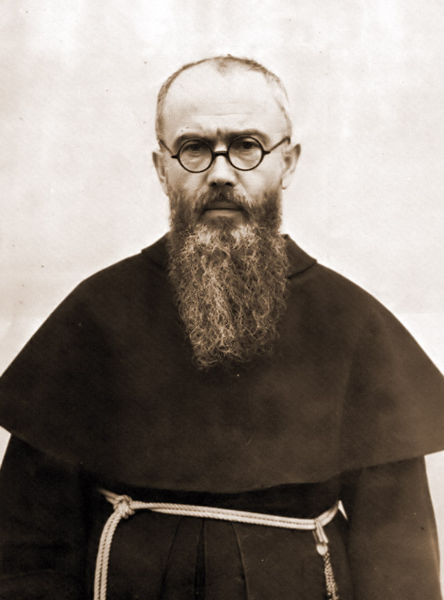

Марианское Движение священников и мирян
Марианское Движение священников и мирян к триумфу соединённых Сердец Иисуса и Марии
Всё для Иисуса через Марию, по примеру святого Иосифа и при помощи святых ангелов.
Девиз MPL
Предисловие
Одной из глубочайших и прекраснейших тайн нашей веры является тесное единение Святейших Сердец Иисуса и Марии.
Как в Адаме и Еве две воли соединились в непослушании и навлекли вину на весь человеческий род, так в Иисусе и Марии две воли соединились в совершенном послушании и принесли человечеству спасение.
Маленькая Жасинта из Фатимы незадолго до своей смерти сказала своей кузине Лусии:
«Скажи всем, что Бог дает нам благодати через Непорочное Сердце Марии, что люди должны их просить, что Сердце Иисуса хочет, чтобы рядом с Ним почиталось также Сердце нашей Небесной Матери. Нужно просить мира у нашей Небесной Матери, так как Бог вверил его ей».
Явление Ангела обещало трем детям, что Сердца Иисуса и Марии услышат их просьбы. Так почитание Сердца Иисуса нашего Господа и Его Непорочной Матери дополняется почитанием Соединённых Сердец Иисуса и Марии, чтобы тем самым подготовить их триумф во всем мире.
От всего сердца я радуюсь новообразованному Марианскому Движению священников и мирян, которое поставило содействие этому триумфу своей возвышенной целью. Да дарует Бог этой малой общине благодать неуклонно расти и сохранять верность своей учредительной харизме через все бури и невзгоды.
Именно из-за постоянно растущего смятения внутри Церкви, вследствие пагубных стремлений уподобиться духу этого мира, указание св. Кирилла Александрийского должно быть для нас незыблемым принципом:
«Если бы мы из страха перед неприятностями уклонялись от того, чтобы говорить истину во славу Божию, как могли бы мы дерзать в присутствии христианского народа праздновать борения и триумфы мучеников, слава которых зиждется именно на том, что они в своей жизни осуществили слово: „Борись до смерти за истину“».
(Сир 4,28 | Epistula 9)
Март 2022 г., в торжество св. Иосифа
Афанасий Шнайдер, вспомогательный епископ архиепархии Святой Марии в Астане
MPL представляет себя
Наше основанное 8 декабря 2021 года Марианское Движение священников и мирян к триумфу Соединённых Сердец Иисуса и Марии (MPL) ориентируется в своей духовной направленности полностью на первоначальную форму основанного св. о. Максимилианом Марией Кольбе Воинства Непорочной (Milizia Immaculatae). Поэтому мы избрали этого великого апостола Марии и борца против всех ересей, наряду с Божией Матерью Марией, Матерью Церкви, и св. Иосифом, покровителем Церкви, особым покровителем нашего нового апостольского движения.
«О Непорочная, когда же наконец Ты воцаришься в сердцах всех и каждого в отдельности? Когда же наконец все жители земли признают Тебя Матерью, а Небесного Отца — Отцом?»
– Св. о. Максимилиан М. Кольбе
«Кто исполняет волю Отца Моего, тот Мне брат, и сестра, и матерь».
(Мф 12,50)
Цели MPL
Мужественное исповедание истинной католической веры
Почитание Соединённых Сердец Иисуса и Марии и содействие их триумфу во всем мире
Подражание Святому Семейству из Назарета через жизнь в Божественной Воле, чтобы тем самым участвовать в обновлении Церкви
Взаимное укрепление и поддержка на общем пути веры, чтобы иметь возможность противостоять великому искушению уподобиться миру и его принципам (ср. Рим 12,2; 2 Тим 4,3-5)
Давать опору и ориентацию всем, кто находится в поиске истины
Катехизация
Апостольская и миссионерская работа
Конкретные средства
Следующие пункты показывают нам, как мы можем конкретно участвовать в апостольстве к триумфу Соединённых Сердец Иисуса и Марии:
Укоренить собственную жизнь полностью в воле Божией и поддерживать тесную связь с Богом
Регулярное принятие святых таинств
Полное посвящение Непорочной согласно правилу MI
Посвящение Соединённым Сердцам Иисуса и Марии
Заместительная молитва, жертва и страдание
(Мы молимся особенно за Святейшего Отца, епископов, священников, всех посвященных Богу и об освящении семей. Также защита жизни и обращение всех заблуждающихся и неверующих и всех врагов святой Церкви должны быть нашей особой молитвенной заботой.)Поддержание ежедневной молитвы Розария
Проповедь и распространение литературы
Распространение Чудесного Медальона
Дела любви и пожертвования

Победительница всех ересей
«Ереси уничтожает она, не еретиков, ибо этих она любит и желает их обращения. Именно потому, что она их любит, она освобождает их от ереси и уничтожает их ложные взгляды и убеждения».
– Св. о. Максимилиан М. Кольбе
Мария хочет вести каждую душу к невежественному обручению со Христом. Однако Люцифер и его приспешники хотят предотвратить господство Иисуса в душах. Его предприятия направлены на то, чтобы стереть имя Иисуса Христа со всей земли. Он полон решимости уничтожить всех, кто верит в это имя.
Первой мишенью его атак является Католическая Церковь, ибо Католической Церкви Бог вверил все духовные сокровища для всего человечества. Чтобы осуществить свои планы разрушения, сатана особым образом пользуется масонством. Эта основанная в 1717 году тайная секта не останавливается ни перед какой жестокостью, чтобы полностью стереть Католическую Церковь и всякую веру в сверхъестественный мир.
Но Божия Матерь не смотрит на это безучастно. С материнской любовью она борется за спасение душ своих отпавших овечек. В 1917 году Непорочная Дева являлась с мая по октябрь трем детям-пастушкам в Фатиме, чтобы предложить последнее средство спасения: Её Непорочное Сердце. Мария призвала к молитве и жертве за обращение грешников. Она пожелала молитвы Розария и посвящения Её Непорочному Сердцу, прежде всего посвящения России, чтобы она обратилась и не распространяла свои коммунистические идеи в мире.
В том же месяце, когда Непорочная через солнечное чудо в Фатиме дала доказательство того, что это действительно была она, кто там являлся, св. Максимилиан М. Кольбе был вдохновлен основать Воинство Непорочной. Без знания о событиях в Фатиме он стал инструментом для планов Божией Матери. Его видением было посвятить Непорочной все души во всем мире и через Марию завоевать все сердца для Иисуса.
Что было причиной его пламенного рвения? Глубоко потрясенный, он 13 октября 1917 года, будучи молодым студентом в Риме, стал очевидцем масонских процессий, которые, распевая песни в честь сатаны, шли к Ватикану. На транспарантах он читал надпись: «Сатана будет править в Ватикане, а Папа будет его слугой».
Он пишет: «Когда масонство в Риме всё больше выходило на публику и разворачивало свои знамена перед окнами Ватикана, на которых они изображали св. Архангела Михаила попираемым и побежденным Люцифером, и распространяли листовки, оскорблявшие Святейшего Отца, возникла идея создания союза для борьбы против масонства и других слуг Люцифера».
Масонство распространяет свои идеологии через все СМИ, журналы и книги. Все богохульные тенденции и программы исходят преимущественно из их мастерской. О. Кольбе был очень хорошо информирован и констатировал: «Когда мы обращаем взор вокруг себя, мы замечаем пугающее исчезновение морали, прежде всего среди молодежи. Появляются союзы, которые поистине адские. (…) Они работают лихорадочно, согласно решениям масонов: „Мы победим Католическую Церковь не аргументами, а извращением нравов!“»
В XIX веке враждебные силы проникли во все сферы жизни. Они просочились даже в Святую Церковь, чтобы распространять идеи и дух либерализма во всех его проявлениях в семинариях, высших школах и монастырях. Пропагандировалась не просто одна ересь, а сразу все ереси, которые когда-либо существовали. В модернизме упакованы все ереси. Все лжеучения, которые когда-либо атаковали и разлагали Церковь, объединяются здесь и переходят в генеральное наступление, чтобы разрушить Церковь изнутри.
Экуменизм подрывает Божественную Истину, которая единственно и исключительно была вверена Римско-Католической Церкви её Основателем, Господом нашим Иисусом Христом. Плоды нельзя не заметить: Католическая Церковь стремится приспособиться к другим христианским конфессиям. Заново определяется отношение религий друг к другу, как если бы все религии почитали одного и того же Бога и были путями спасения.
Более двух столетий Папы предостерегали против ложных идей. Тем не менее враги занимали всё больше ключевых позиций в политике, а также в Церкви. После Второго Ватиканского Собора чуждые идеи возобладали в Риме: теологические, политические, философские, демократические идеи, которые совершенно чужды существу Церкви. Они действуют в её лоне как разрушительный яд.
И именно в противовес всему тому, что только что было описано, св. Максимилиан М. Кольбе основал Воинство Непорочной. MI полностью одушевлена духом «Общества Божией Матери», как его описывал Гриньон. Она охватывает мирян и посвященных Богу. Правила настолько коротки и просты, что ими можно жить в каждой семье, в каждой общине, в каждой монашеской общине!
Воинство Непорочной
«Она будет попирать тебе (змею) голову».
(Быт 3,15)
«Ты одна победила все ереси во всем мире».
(Из службы Пресвятой Деве)
I. Цель
Обращение грешников, еретиков, раскольников и т.д., особенно же масонов; и освящение всех под покровительством и через посредничество Непорочной.
II. Условия
Полное посвящение Непорочной, отдавая себя как инструмент в её руки.
Носить Чудесный Медальон.
III. Средства
По возможности каждый день призывать Непорочную этой краткой молитвой:
«О Мария, без греха зачатая, молись о нас, к Тебе прибегающих, и о всех, к Тебе не прибегающих, особенно о масонах».Использовать все законные средства по возможности, в различных жизненных состояниях и обстоятельствах, при представляющихся возможностях: это предоставляется рвению и благоразумию каждого; особым же средством является распространение Чудесного Медальона.
Правила были написаны о. Кольбе на латинском языке, на языке св. Церкви, так сказать, на вечно действующем языке.
Притягательная сила о. Кольбе была такова, что вряд ли найдется что-то подобное: его лекции вскоре стали настолько посещаемыми, что самые большие залы становились малы. Он распространял листок, из которого возник «Рыцарь Непорочной». Этот ежемесячный журнал для членов Воинства достиг в Польше в разгар мирового экономического кризиса тиража в один миллион экземпляров.
Он основал в 1927 году «Град Непорочной» (Непокалянув), который в течение 12 лет вырос с 24 до 762 монахов, плюс еще почти 200 постулатов. В Японии, почти полностью языческой стране, он в течение нескольких лет построил крупнейшее христианское апостольство, которое там существует — хотя он прибыл туда в 1930 году без денег и без знания японского языка. В Нагасаки он основал второй «Град Непорочной» («Мугендзай-но соно»): там также издательства, миссионерские станции и несколько монастырских общин.
«Мы можем жить в бараках и носить латаную одежду, наша пища должна быть скромной, но наши печатные машины, служащие для распространения славы Божией, должны быть лучшими и самыми новыми».
– Св. о. Максимилиан М. Кольбе
Источник радости
Св. Максимилиан М. Кольбе был рукоположен в священники 28 апреля 1918 года. Глубоко проникнутый достоинством своего сана, он прибегает к Непорочной. Она ввела его в тайну Св. Жертвоприношения Мессы и в тайну Пресвятой Евхаристии. Его любовь к Иисусу в этих таинствах касалась сокровенных струн его сердца.
8 сентября 1932 года о. Максимилиан пишет собрату: «Как часто я мечтаю о том, чтобы в Граде Непорочной Спаситель день и ночь был обожаем в монстранции. Сколько благословений низводили бы поклонники с неба на каждый вновь напечатанный экземпляр нашего „Рыцаря“, на каждую душу, которая где-либо в мире присоединяется к Воинству...»
И каждому «рыцарю» он взывает: «Люби Непорочную от всего сердца, часто обращайся к ней с краткими молитвами, и она научит тебя воздавать безграничной любовью за любовь Спасителя, которую Он засвидетельствовал тебе на Кресте и в Пресвятом Таинстве Алтаря».
Очевидцы в концентрационном лагере постоянно сообщали о его апостольском рвении, его духе веры, его жизненной жертве и радости в этой жертве. Источником этой радости и преданности, как он говорил сам, является: «Непорочная и Пресвятое Сердце Иисуса в Пресвятых Дарах». И этой радостью он делился со всеми, кто был вокруг него. Он был как магнит, который тянул нас к Богу и к Божией Матери. Часто он говорил нам о Божественном милосердии. Он хотел обратить весь лагерь... Непрестанно он молился за грешников, за врагов. Когда он мог, он отдавал свой рацион еды другим голодным и брал на себя самую тяжелую работу вместо других.
«Завоевать весь мир и каждую отдельную душу, которая есть сегодня или которая будет до конца мира, для Непорочной, и через неё — для Пресвятого Сердца Иисуса».
– Св. о. Максимилиан М. Кольбе
У источника жизни,
у обочины времени,
там текут благодати
из моря вечности.
Благодати, что текут
в бесчисленные часы,
крепко к замыслу
Отца привязаны.
Они не вернутся,
они спешат мимо.
Даже жалобы и плач
не принесут их больше.
Если ты их проиграешь
по глупости своей,
тогда они потеряны
и навеки ушли.
Посему не давай им течь,
благодатям жизни,
как воде мимо лишь
тебя совсем напрасно.
Как рыбка в воде
должен ты всегда плыть,
в Божественной Воле,
всем своим чувством.
Через веру и надежду,
молитву и любовь,
и презрение греха
вместе с корнями и побегами.
Этому учит тебя Мария,
Матерь Господа,
через которую Он дарит благодати
в потоках так охотно.
(Капуцинки Вечного Поклонения, Зальцбург)
Могущественное оружие детей Марии
Молитва
Подобно тому как солнце отражается в море, так слава Божия сияет в нас отражением, когда мы живем и молимся в Его присутствии. Поэтому искренняя молитва — это самое могущественное средство для раскрытия заложенного в нас божественного сияния. Молитва — это высшее достижение, на которое способен человек. Так выражает это св. Эдит Штайн.
Кто истинно посвящен Божией Матери, тот без труда, где бы он ни был, проникает в сердца людей, даже самых худших, и спасает бесчисленные души.
(Св. о. Максимилиан М. Кольбе)
Именно в сегодняшнем суетном мире апостольство кратких молитв, к которому призывает нас Святой, — это лучший способ оставаться в связи с Богом и также много делать для спасения душ. Краткие молитвы подобны пулям из пулемета, которыми мы боремся с врагом. Сам того не зная, благодать Господня и милосердие Непорочной призываются на нашего ближнего, пока он однажды, побежденный, не падет ниц перед своим Творцом и Искупителем.
В MI особенно рекомендуется следующая краткая молитва:
Иисус, Мария, я люблю Вас, спасайте души!
Бог связывает совершенно особые благодати с молитвой Розария, о которой нас так настоятельно просит Божия Матерь. Эта молитва, над которой часто так посмеиваются, является цепью, сковывающей сатану. Она является духовным оружием. Её бусины — это «боеприпасы»! Не зря враги св. Церкви боятся этой молитвы больше, чем всего физического оружия христиан!
Подвластны Владычице
Мария — это путь Бога к человеку и человека к Богу. Так решила Божественная Мудрость. Как Иисус пришел к людям через Свою Матерь, так и люди приходят через неё к Богу. В св. Людовике Марии Гриньоне де Монфоре и в св. Максимилиане М. Кольбе она избрала себе ревностных апостолов Марии, чтобы открыть людям духовное богатство полного посвящения Иисусу через Марию. Поэтому проживаемое посвящение Марии — это, так сказать, скорый поезд к святости. А святость — это одно из самых сильных орудий, против которого любая духовная власть ада совершенно бессильна, потому что она полностью укореняет нас в Божественной Воле.
Жертва
Как золото в огне, так любовь должна очищаться в жертве. Это подтверждает о. Максимиллиан на собственном опыте: «Ничто так не соединяет нас с Непорочной и не укрепляет нас в любви, как именно любовь, соединенная со страданием из любви. Именно на этом пути страдания мы можем убедиться, действительно ли мы принадлежим ей без всяких оговорок. Будем помнить, любовь живет и питается жертвами».
Специальные молитвы MPL
Полное посвящение Марии
О Непорочная, Царица неба и земли, Прибежище грешников и Матерь наша, любящая нас столь сильно и коей Бог вручил всё домостроительство милосердия! Я, N., неверный грешник, повергаюсь пред стопы Твои и умоляю Тебя из глубины сердца моего: Соблаговоли принять меня всецело и полностью как Твоё достояние и Твою собственность. Делай со мною, что Тебе угодно, со всеми способностями души и тела моей, со всей жизнью, смертью и вечностью моей. Распоряжайся мною вполне по воле Твоей, дабы исполнилось о Тебе сказанное: «Она сокрушит главу змея» — и равно: «Ты одна победила все ереси по всему миру». Сделай меня орудием в руках Твоих, дабы служить Тебе и умножать славу Твою по мере возможности во стольких падших и тёплых душах. Так будет всё более распространяться нежное царство Пресвятого Сердца Иисуса. Ибо куда Ты вступаешь, Ты обретаешь благодать обращения и освящения, ибо все благодати приходят к нам от Пресвятого Сердца Иисуса только через руки Твои. Дай мне восхвалять Тебя, о Пресвятая Дева, и ниспошли мне силу против врагов Твоих. Аминь.
Молитва Воинства Непорочной
О Мария, зачатая без греха, молись о нас, к Тебе прибегающих, и о всех, к Тебе не прибегающих, особенно о масонах.
Посвящение Соединённым Сердцам
Предвечный Отче, Ты принял высшую славу от Святейших Сердец Иисуса и Марии. Твой Божественный Сын, ставший человеком, в единстве с Матерью Своей в духе любовного искупления, в совершенстве исполнил волю Твою. Мы вновь приносим Тебе сию славу, да благословишь и исцелишь нас через сии Сердца и пошлёшь Святого Духа обновить лик земли. Божественный Искупитель, признаём Тебя Сыном Отца Вечного, единым Посредником пред Богом. По благоволению Отца Ты соединил святую Матерь Твою как Посредницу и Помощницу в деле искупления с миссией Твоей. В сём духе живого упования желаем посвятить себя, семьи наши и особенно Марианское Движение священников и мирян соединённым Сердцам Иисуса и Марии. Мы обязуемся тем жить в духе Сердец Иисуса и Марии и трудиться, да исполнятся прошения молитвы, которой Ты Сам научил нас: желаем стремиться, да везде, где имеем влияние, да святится имя Твоё, да приидет Царствие Твоё к нам, и всё творится по воле Твоей Божественной. Тогда благословишь Ты и землю хлебом насущным для всех. Простишь прегрешения наши и склонишь сердца наши к миру. Милосердно сохранишь нас от новых прегрешений и наконец избавишь от всякого зла. Сие просим через возлюбленную Матерь и Владычицу нашу, к коей с упованием взываем приветствием Ангела: «Радуйся, Мария, благодати полная, Господь с Тобою. Благословенна Ты в жёнах, и благословен плод чрева Твоего, Иисус. Святая Мария, Матерь Божия, молись о нас, грешных, ныне и в час смерти нашей. Аминь».